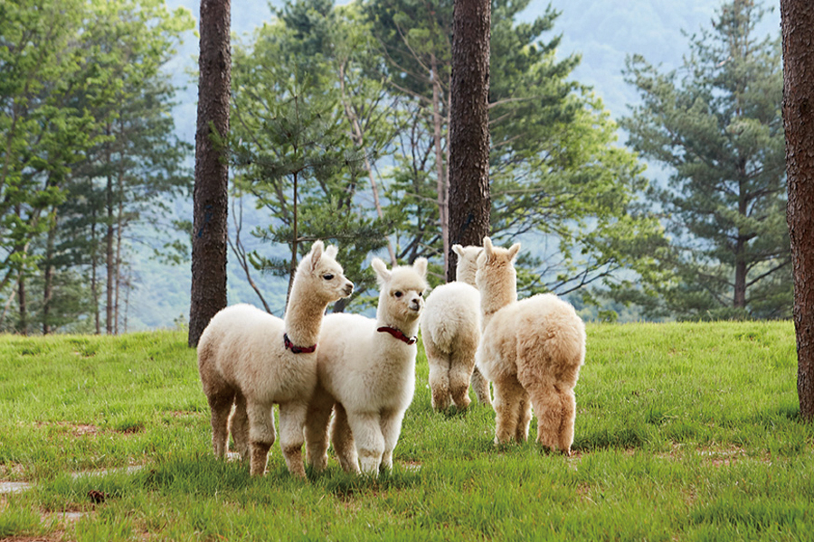
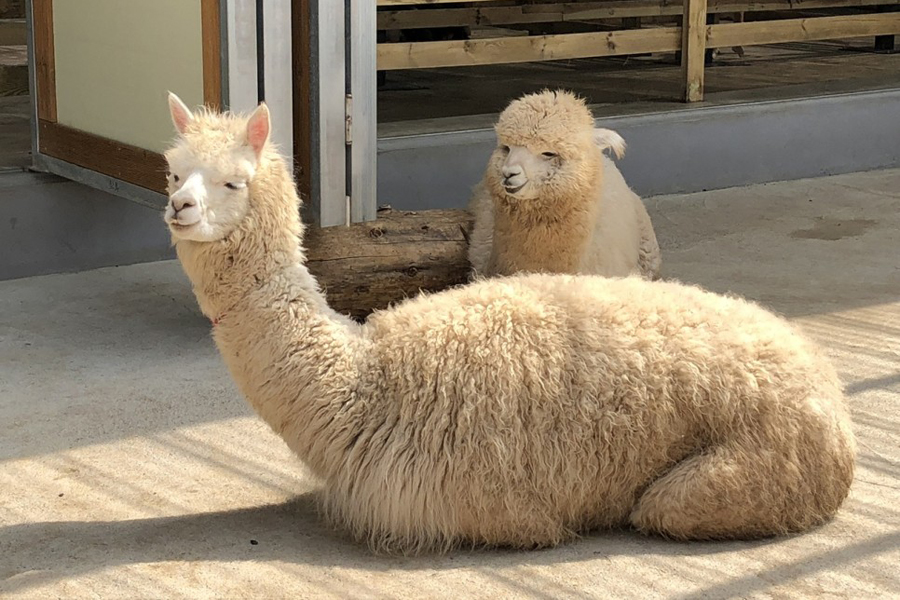
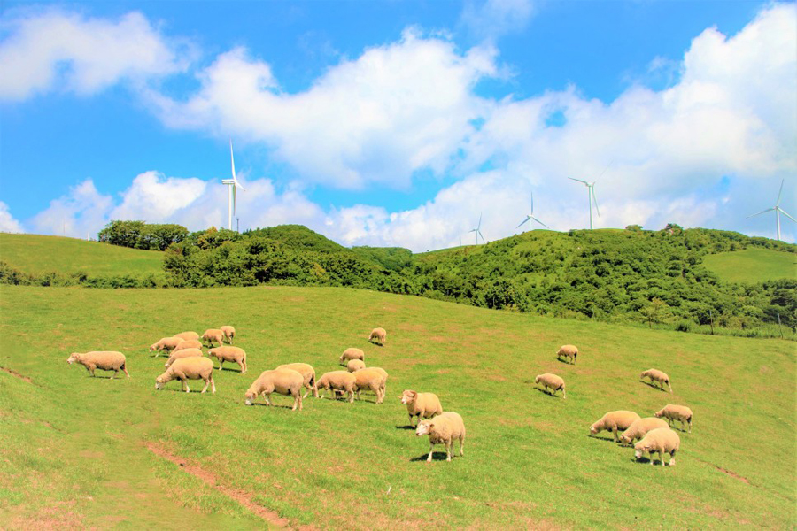
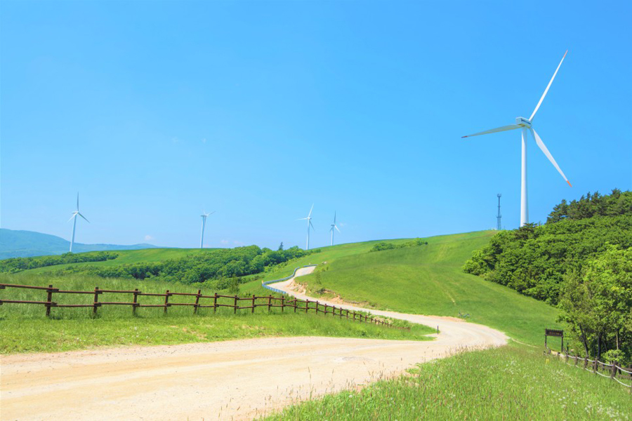
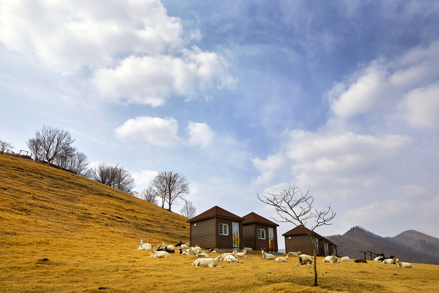
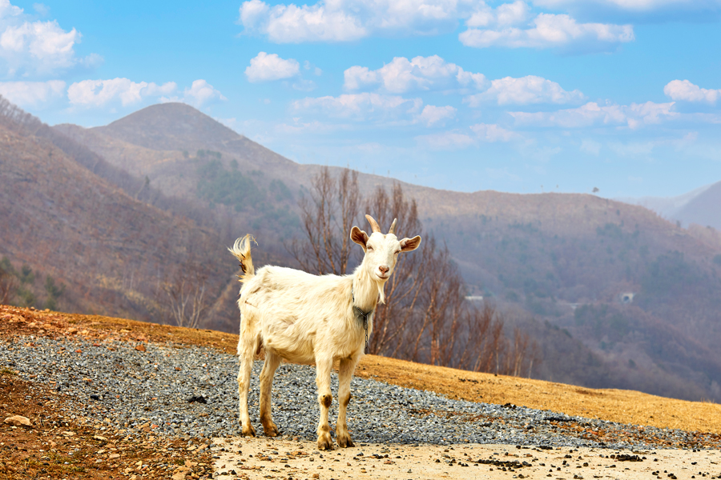

아이와 함께, 몽글몽글 귀여운 동물을 만나봐요
청정한 공기와 맑은 강, 초록의 숲. 눈에 닿는 모든 것이 자연인 시간.
알파카부터 산양까지, 귀여운 동물들과 함께라면 강원도에 발 딛는 순간부터 힐링이 시작된다.
<참고 강원네이처로드 매거진>
언택트 여행지 추천 명소 여행 매거진 - 강원네이처로드


1. 홍천 알파카월드 (숲 속 동물나라에서 알파카와 함께 보내는 동화 같은 시간)
강원 홍천군 화촌면 풍천리 310
국내 유일한 알파카 체험 동물원이다.
홍천군 화촌면 풍천리 너른 숲속에 위치한 알파카월드에서는 페루 안데스산맥에서 서식하는 알파카와의 조우가 기다리고 있다.


2. 평창 대관령 삼양목장 (푸른 초원과 새하얀 풍력발전기가 이국적인 풍경을 자아내는 곳)
강원 평창군 대관령면 꽃밭양지길 708-9
고원지대 우뚝 솟은 새하얀 풍력발전기와 여유로이 풀 뜯는 양 떼들, 드넓은 초원과 하늘 아래 펼쳐진 경치는 눈으로 하여금 마음을 자극한다.


3. 태백 몽토랑 산양목장 (드넓은 초원이 펼쳐지는 이국적인 풍경)
강원 태백시 효자1길 27-2
태백 시내가 내려다보이는 해발 750m 고지대에서 위치한 곳으로 2020년 과거 사슴목장이었던 곳에 산양을 풀어 흥미로운 체험이 기다리고 있는 목장으로 조성했다.
1/1
1